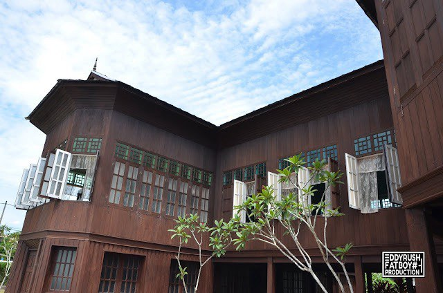
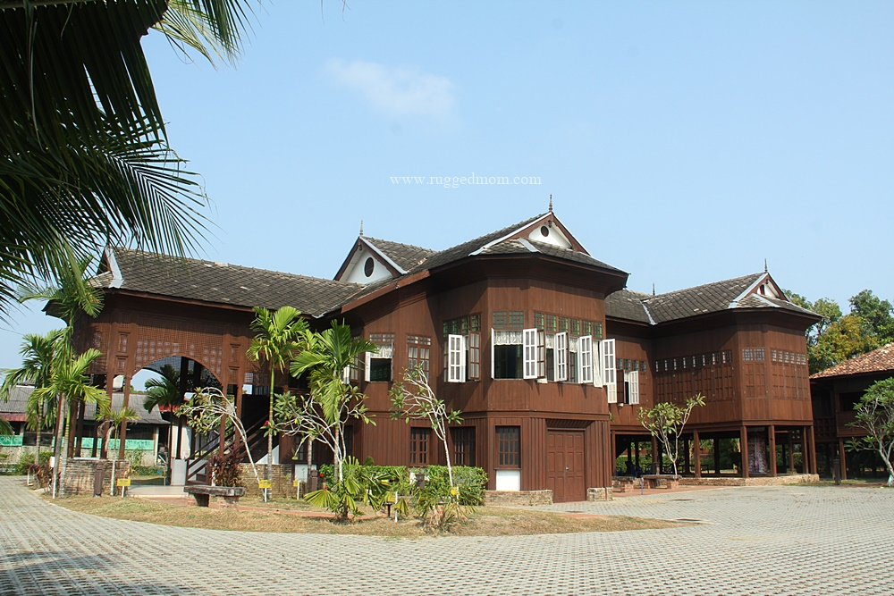
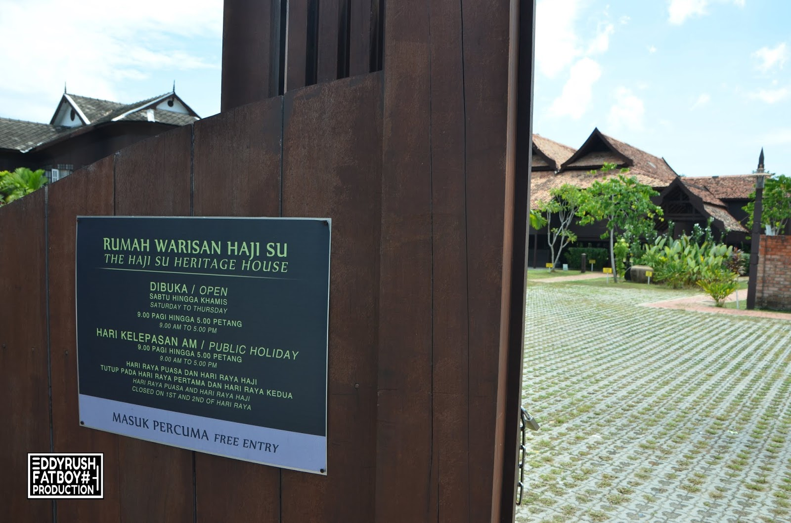
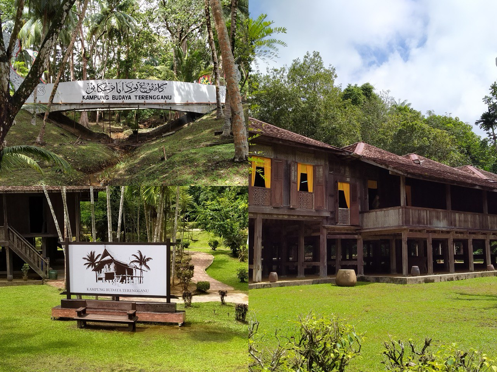
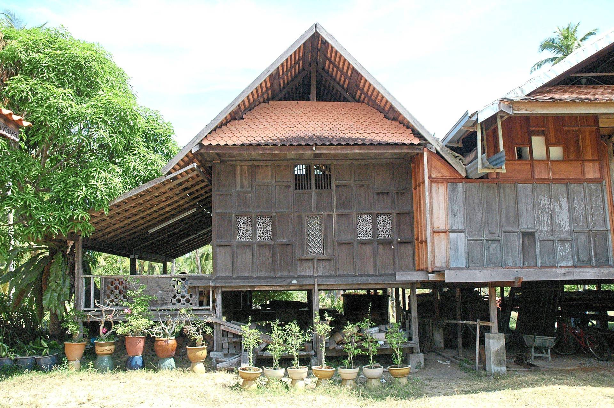

One of the state's new attractions is the Malay mansion known as Rumah Haji Su in Kampung Losong Haji Su. The RM3.2 million State Museum contributed to the reconstruction of the Haji Su Heritage House, which is now fully functional and available for free public tours. To encourage more tourists to visit the heritage home, it was made free of charge available to visitors on a daily basis through the State Museum and Tourism of Terengganu.
The homeowner had a unique history and his name was immortalized as the name of the community, Losong Haji Su. It is the largest house in the settlement and is surrounded by traditional houses that represent the style of living of the family that formerly resided in it. Haji Su is a businessman who was once well-known in the state.



2. The Terengganu Cultural Village
The Terengganu Cultural Village located at the State Museum in Losong is the first cultural village in Terengganu with the concept of a 'live museum.' This Cultural Village serves as a comprehensive center to gather cultural heritage arts from all districts in Terengganu, representing the State Government's efforts to elevate the traditional heritage of the Malay community.
The Cultural Village features seven traditional houses which are the Fisherman's House, Bachelor's House with a Veranda, Twin Bachelors' House, Dutch Gabled House, Tele House, Tengku Long Palace, Singgahsana Courtyard, and Heritage Courtyard.
It also offers demonstration activities such as net and trap making, keropok (fish crackers) production, arts and calligraphy carving, wood carving, weaving, kite-making, spinning tops, pottery, copper crafts, keris (dagger), traditional clothing exhibitions, batik canting, cooking Asyura porridge, and Berzanji performances.
The ticket prices for adult visitors (aged 13 and above) are set at RM10, while it is RM5 for children (eight to 12 years old), senior citizens, and persons with disabilities (PWDs).
These fees are intended for maintenance and improvements to ensure the Cultural Village is always in good condition. Additionally, the revenue generated contributes to conservation and preservation efforts of cultural heritage arts, positioning them as high-value tourism products.


3. Keropok Warisan Losong
In the late 1960s and early 1970s, the production of keropok shifted to the areas of Losong Haji Su and Kuala Hiliran. This relocation did not involve a shift in business but marked the emergence of a new business area due to Kedai Tanjung no longer serving as a fishing jetty, and its functions diminished following the demolition of the Kedai Tanjung Market. As a result of the market's demolition, business transactions and sales shifted to the larger Kedai Payang Market, which was previously a small market area.
Simultaneously, fishing activities and the landing of fishery products relocated to Pulau Kambing. This transformation turned Losong into a suitable hub for the trade of keropok and traditional Terengganu seafood products. Today, Losong stands as a unique identity of Terengganu inseparable from its residents.
Keropok Warisan Losong is a restaurant specializing in the sale of various seafood products, primarily the famous keropok lekor a popular snack made from a blend of fish paste and sago flour. Located in Kampung Losong Haji Su, a village renowned for its keropok lekor industry, the restaurant offers a comfortable and friendly environment with welcoming staff. Here, you can savor the authentic taste of Terengganu's keropok lekor, known for its crispy, chewy texture and flavorful profile. Keropok Warisan Losong provides a wonderful opportunity to experience the culture and cuisine of Terengganu, showcasing the uniqueness and deliciousness of its keropok lekor.